ANÁLISE E DESENVOLVIMENTO DE SISTEMAS
Bestsign
Envio, posicionamento de campos e assinatura de documentos PDF pelo celular.
Renan Santa Rosa Xavier · RM 566997 · MVP Sprint 1
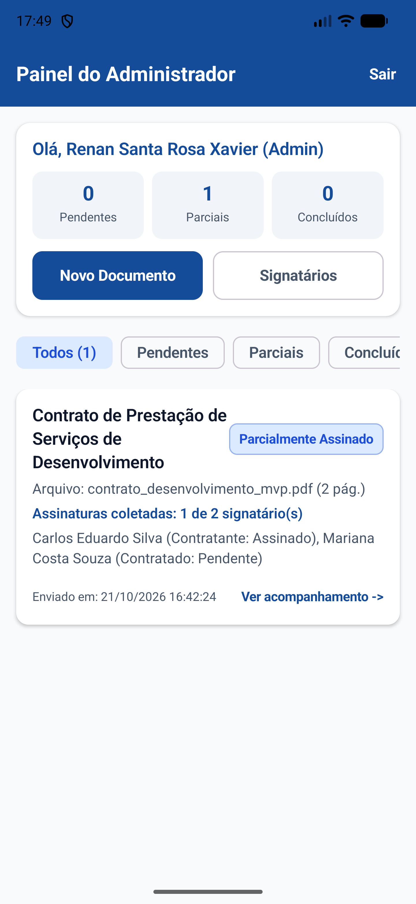
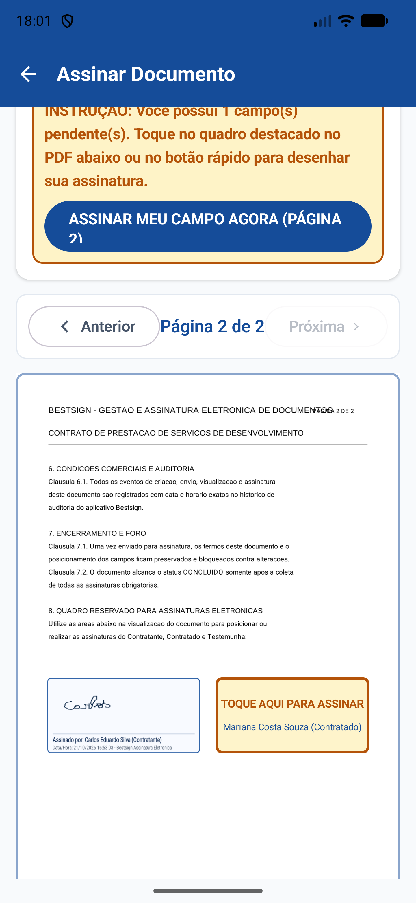
Dificuldades na assinatura pelo celular
O que acontece hoje e como o aplicativo resolve.
Hoje
- Pessoas com pouca prática não acham onde assinar no PDF.
- Usuários compartilham a mesma conta por falta de login próprio.
- Signatário assina sem saber seu papel no contrato.
- Quem envia não acompanha quem já assinou ou falta assinar.
Na proposta
- Botão no topo leva direto para a página e campo certos.
- Login individual por e-mail e senha para cada signatário.
- Papel no contrato e mensagem aparecem antes de abrir o PDF.
- Status e histórico atualizam a cada assinatura coletada.
Qualquer pessoa encontra seu campo e assina o PDF no celular sem depender de ajuda técnica.
Foco em usabilidade para leigos e fim do compartilhamento de senhas
Fluxo do documento em passos
Do cadastro pelo administrador até a gravação no PDF.
1Upload do PDFValida páginas e define signatários
→
2Posição na folhaArrasta quadros sobre a página
→
3Desenho na telaSignatário assina no quadro Canvas
→
4Gravação no PDFPDFBox estampa rubrica e data
Arquitetura local preparada para API
Repositórios isolam o banco SQLite das telas do aplicativo.
01
Visão do administrador
Cadastro de signatários, validação do arquivo PDF, escolha de papéis e posicionamento dos campos.
Acesso, painel e signatários
Login individual, resumo por status e cadastro com e-mail único.
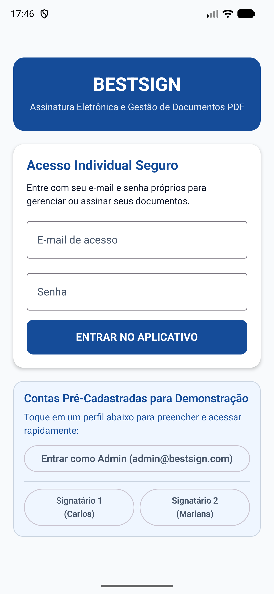
Login e testesAcesso por senha e contas de demonstração.
Painel do adminContadores e filtro por status do documento.
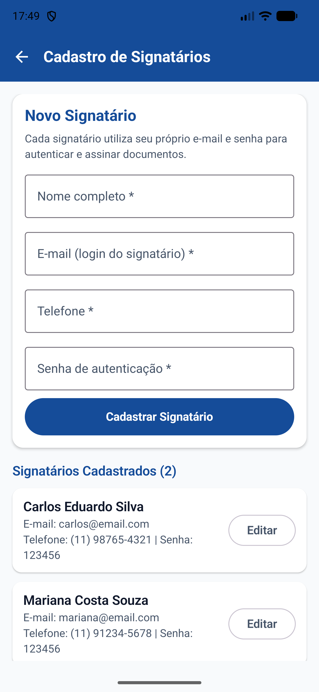
SignatáriosCadastro e edição de nome, telefone e senha.
Upload, papéis e posicionamento
Validação do PDF, escolha do papel e quadros arrastáveis na página.
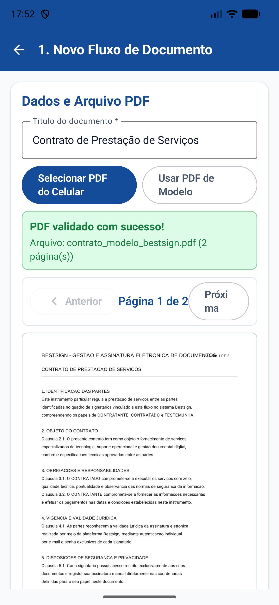
Validação do PDFCheca páginas válidas e exibe na tela.
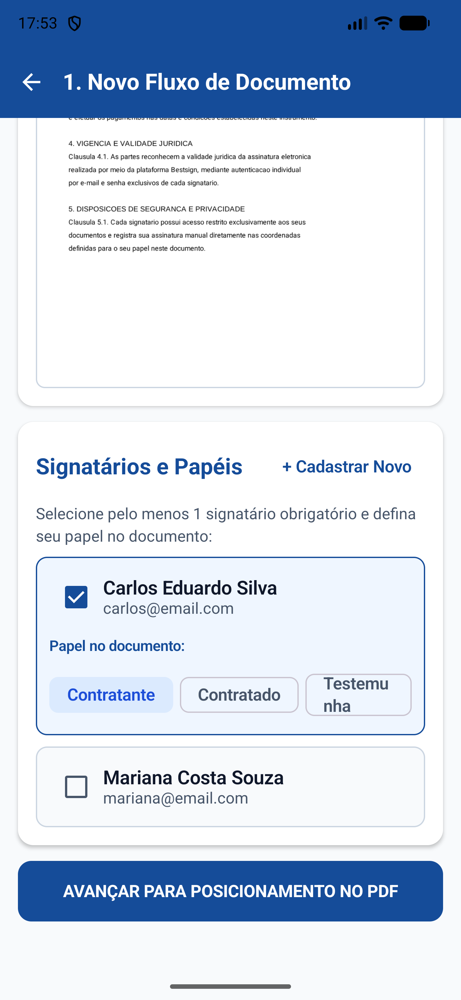
Papel no contratoDefine Contratante, Contratado ou Testemunha.
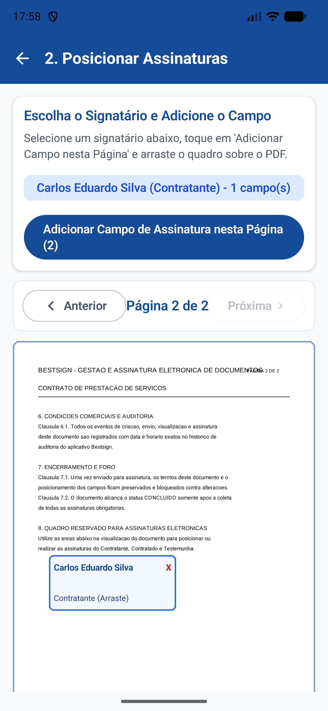
Posição na folhaArrasta o quadro sobre a página do PDF.
Revisão e bloqueio pós-envio
Conferência de campos obrigatórios e proteção contra edições após envio.
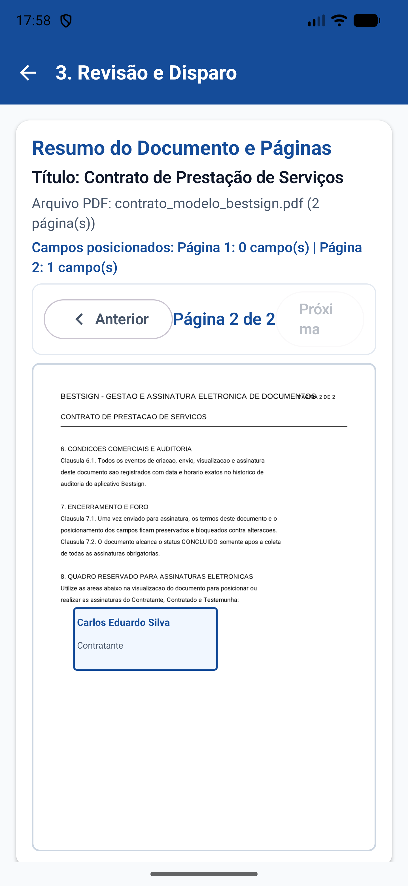
Revisão antes do envioConfere campos por página e mensagem de convite.
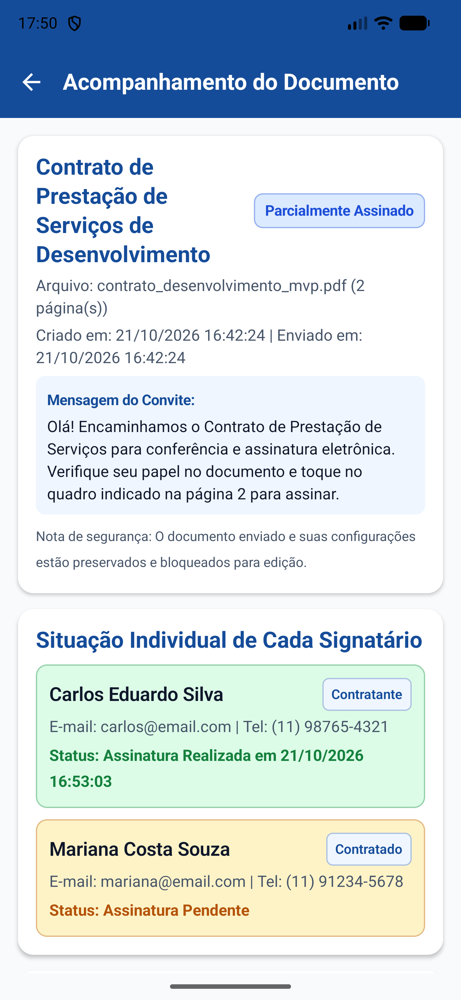
Contrato bloqueadoImpede alterar PDF ou posições depois de enviado.
02
Visão do signatário e auditoria
Acesso restrito aos próprios documentos, destaque visual de onde assinar e gravação no arquivo PDF.
Assinatura guiada no celular
Visão exclusiva do signatário, botão direto para a página e desenho no Canvas.
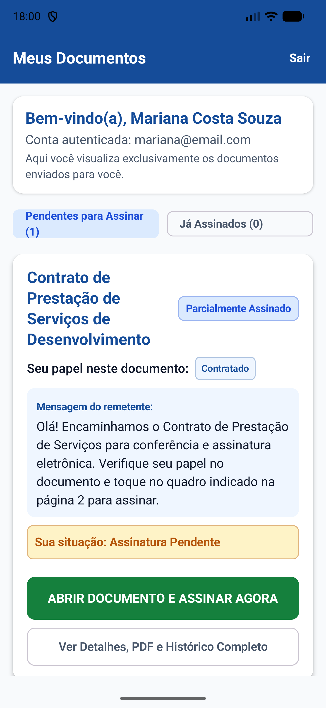
Meus documentosExibe papel no contrato e mensagem do remetente.
Destaque na páginaBotão de atalho no topo e quadro amarelo.
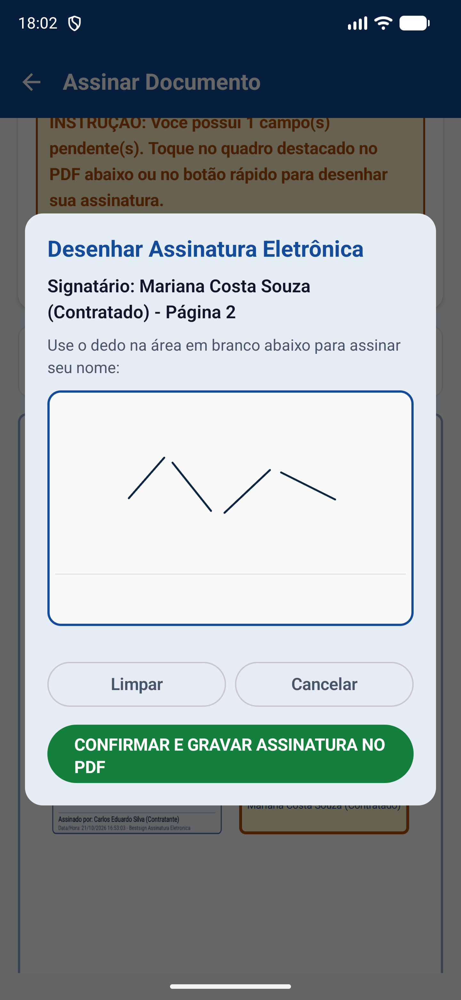
Desenho no CanvasTraço livre com o dedo e botão limpar.
Assinatura com digital do celular
Escolha entre desenho manual ou biometria com preenchimento cursivo por extenso.
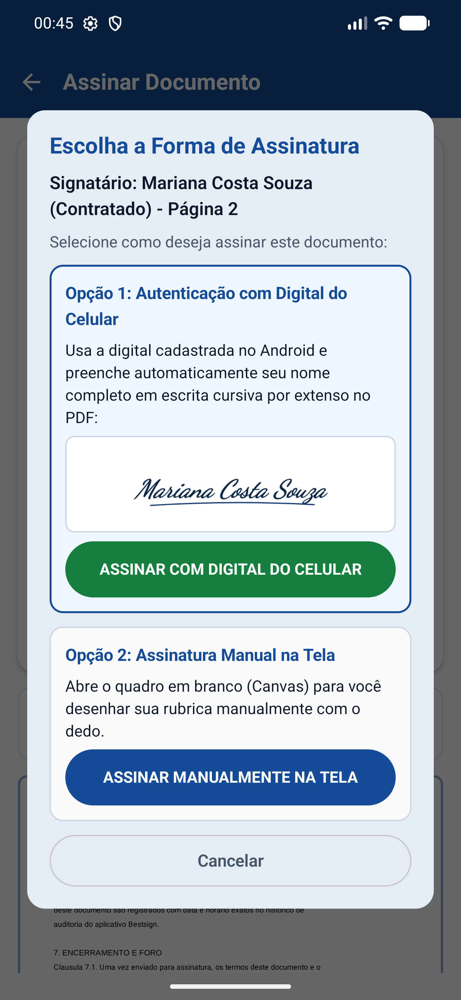
Escolha do modoPopup oferece assinatura por digital ou manual.
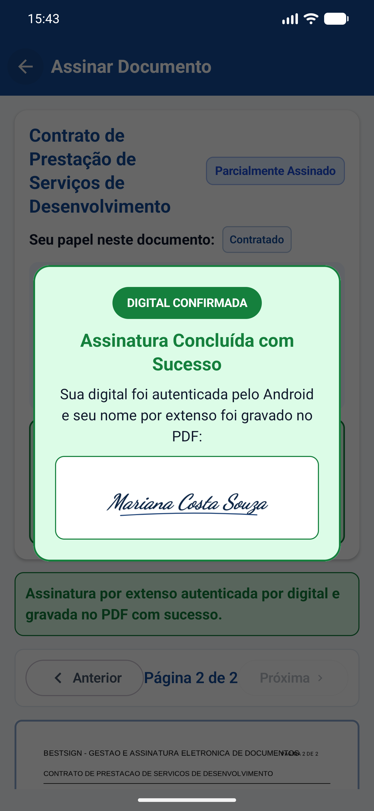
Confirmação rápidaPopup confirma a digital e fecha em 1,5 segundo.
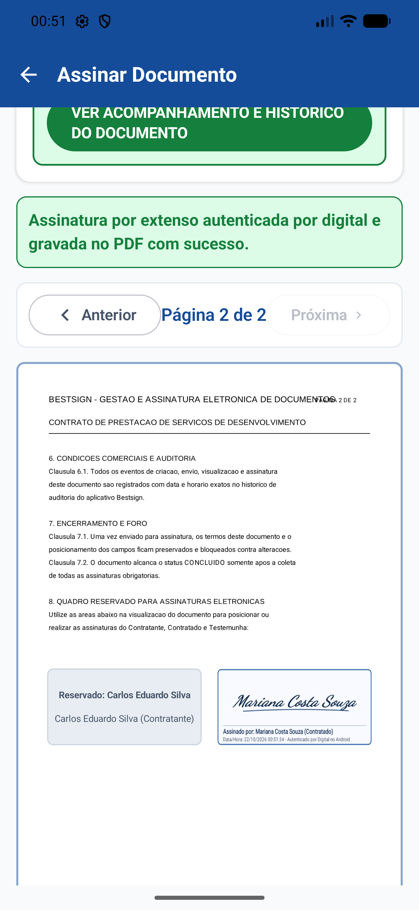
Escrita por extensoNome completo em letra cursiva gravado no PDF.
Gravação no PDF e histórico
Assinatura estampada no arquivo PDF e registro completo de auditoria.
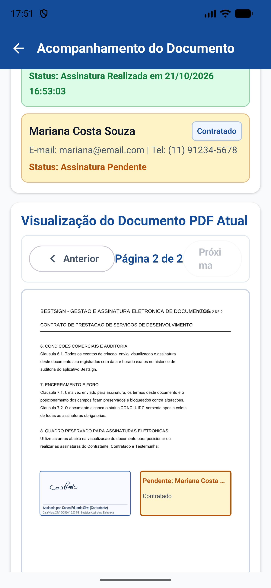
Gravado no PDFRubrica, nome, papel e horário dentro da página.
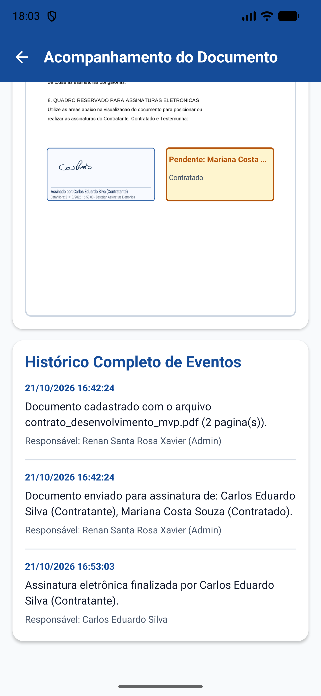
Histórico de eventosRegistra criação, envio e cada assinatura com data.
Estrutura entregue na Sprint 1
Resumo do que foi implementado no aplicativo Android nativo.
9telas nativas em português
6tabelas no banco SQLite
2repositórios isolando os dados
3contas prontas para teste
Obrigado
Renan Santa Rosa Xavier · RM 566997 · Análise e Desenvolvimento de Sistemas